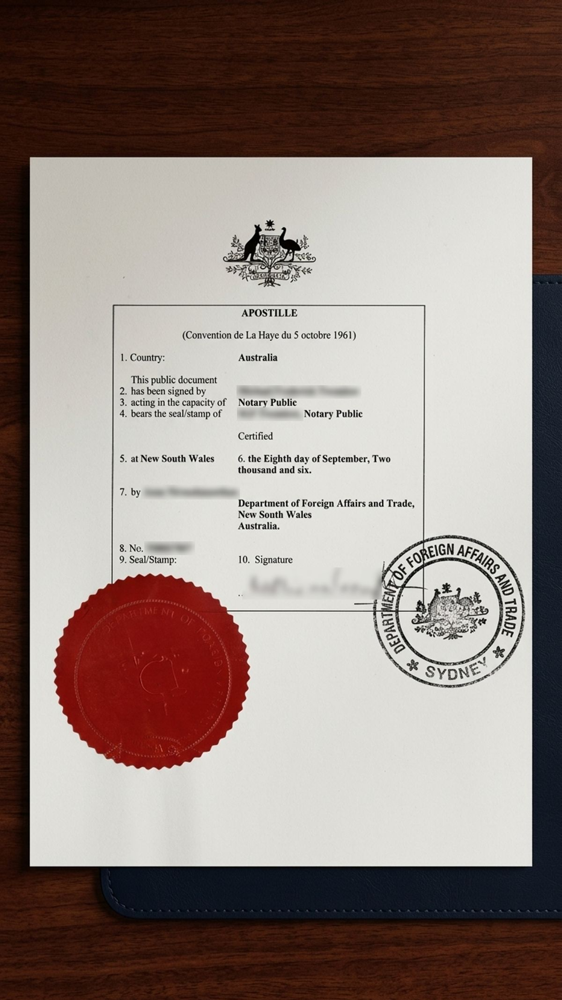
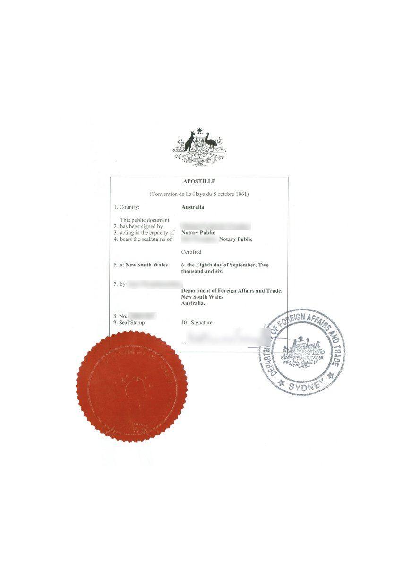
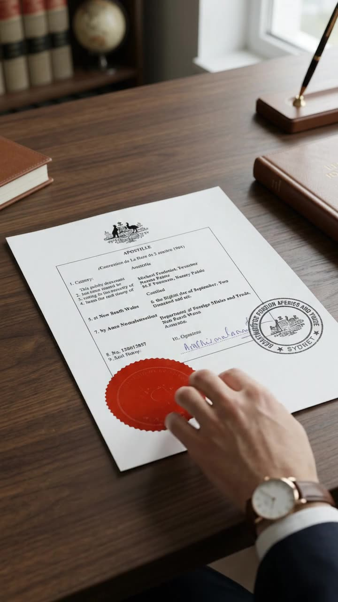
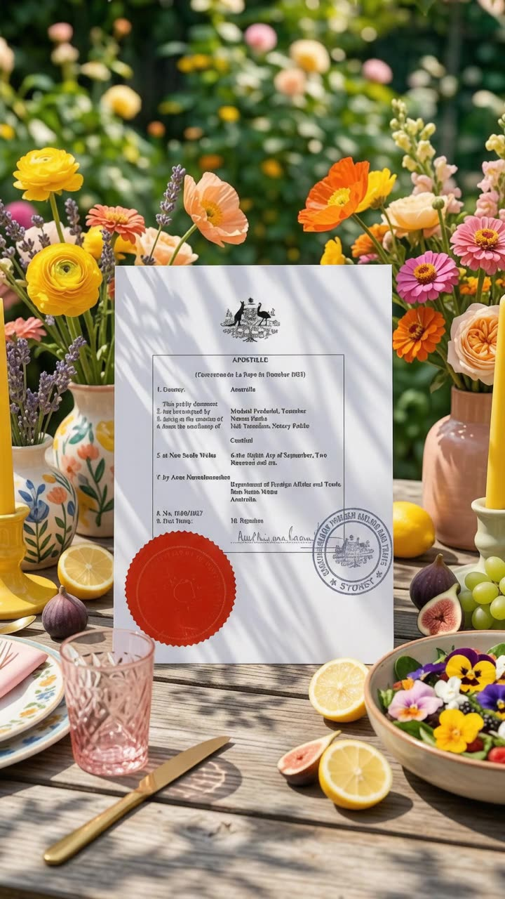
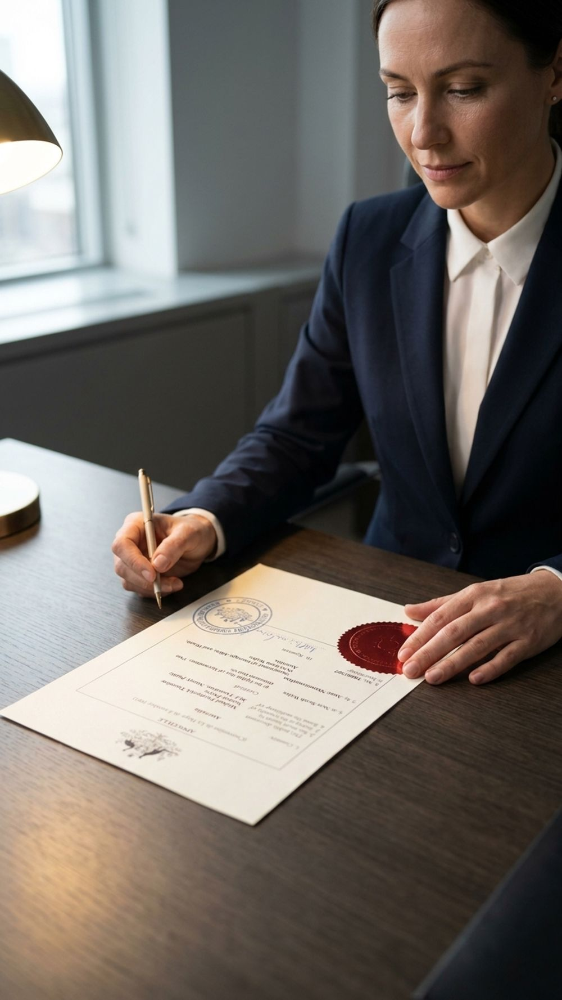

Apostille in Australia: how to get one, what it costs and how it works for Italy
If you need an apostille in Australia, you are probably preparing to use an Australian document overseas: to buy property, apply for citizenship, marry, study, work or manage an inheritance. An apostille is the certificate the Department of Foreign Affairs and Trade (DFAT) places on an Australian public document so it is accepted in countries that belong to the Hague Apostille Convention. This guide covers what an apostille is, how to get one step by step, what it costs, which countries accept it, and how it fits into a power of attorney for Italy.
I am Luna Dreyer, a translator with a BA in Translation Studies from the University of Heidelberg, working in German, English, Spanish, Italian and Portuguese. I help Australians prepare powers of attorney for Italy and plan the apostille around them, so nothing is left to chance.
- Who issues it
- DFAT, through Australian Passport Offices in each state and territory. Overseas, Australian embassies and consulates provide the service.
- DFAT fee
- A$105 per apostille from 1 January 2026, adjusted each 1 January in line with CPI.
- Member countries
- 130 Contracting Parties to the Apostille Convention (HCCH status table, updated 30 June 2026).
- Italy
- A Convention member since 1978, so Australian documents need an apostille plus an Italian translation, not consular legalisation.

What is an apostille?
An apostille is a standard certificate created under the Convention of 5 October 1961 Abolishing the Requirement of Legalisation for Foreign Public Documents. When a public document issued in one member country needs to be used in another member country, the apostille is the only formality that country may ask for. It replaces the older chain of embassy and consular stamps.
In Australia, DFAT is the only authority that can apostille Australian public documents. DFAT describes the service on its page on apostilles, authentications and certificates of no impediment to marriage as confirming that a signature, stamp or seal on an official Australian public document is genuine. Australia has been a party to the Convention since 16 March 1995.
What an apostille certifies
Under Article 5 of the Convention, an apostille certifies three things:
- The authenticity of the signature on the document.
- The capacity in which the person signing the document acted (for example, as a notary public or a registrar).
- Where relevant, the identity of the seal or stamp on the document.
What an apostille does not certify
- The content. As the HCCH explains in its plain language guide, The ABCs of Apostilles, an apostille does not certify what the document says.
- Use at home. An apostille can never be used to recognise a document in the country that issued it. An Australian apostille is for use overseas only.
- Translation or acceptance. The receiving authority overseas decides what it needs. It may still ask for a translation, and DFAT itself notes that in many cases you will not need its services at all.
What an Australian apostille looks like

An Australian apostille follows the model certificate set out in the Convention. It has ten numbered fields, including the country, the name of the person who signed the document, the capacity in which they signed, the place and date of the apostille and its unique number, and it carries DFAT's seal and the signature of the issuing officer. At the time of writing, DFAT issues paper apostilles only, not digital e-Apostilles.
Why you might need an apostille
Documents DFAT can apostille
According to DFAT's list of documents it can and cannot legalise, these include:
- Birth certificates, including commemorative certificates and extracts
- Marriage certificates (not ceremonial or commemorative certificates)
- Death certificates
- Court documents, including divorce certificates
- AFP National Police Checks and fingerprint reports
- Australian citizenship certificates and International Movement Records
- Degrees, transcripts and other official documents from Australian universities, and original TAFE documents
- School documents, but only if verified by the state or territory education body or notarised
- Chamber of commerce documents
- Private documents such as a power of attorney, a will, bank statements or company documents, once notarised by an Australian Notary Public
- Translations that show the translator's name and signature and the NAATI seal
Common life situations
- Buying property in Italy, including at a judicial auction, through a representative holding a special power of attorney (procura speciale).
- Italian citizenship by descent. The Italian Consulate General in Sydney asks for original documents duly legalised and translated into Italian. The rules changed in 2025, so check the current requirements before you order certificates.
- Marrying overseas. DFAT also issues Certificates of No Impediment to Marriage.
- Working or studying overseas, usually with degrees, transcripts or police checks.
- Inheritance and estates, often involving wills, death certificates and powers of attorney.
- Company matters overseas, involving notarised company documents.
How to get an apostille in Australia: step by step

Check what the destination country requires
Find out whether the Apostille Convention is in force in the country where the document will be used. If it is, you need an apostille. If it is not, you need an authentication followed by legalisation at that country's embassy or consulate. Ask the receiving authority whether it also needs a translation, and whether that translation must be apostilled too.
Have private documents notarised by an Australian Notary Public
Private documents, such as a power of attorney, a will, bank statements or company documents, can only be apostilled once they are notarised by an Australian Notary Public. Copies must be notarised too. Original public documents, such as birth, marriage and death certificates, court documents, AFP checks and university documents, can generally be lodged directly. DFAT's notarial services hub on Smartraveller links to notary lists for each state. Notary fees are set by the notary and are separate from the DFAT fee.
Lodge your documents with DFAT by appointment or by post
DFAT delivers the service through Australian Passport Offices in each state and territory. You can book an in-person appointment or lodge by post using the current Document Legalisation Request Form. Check the current form for the correct postal address before sending anything. Enquiries go to legalisations.australia@dfat.gov.au.
Pay the DFAT fee
From 1 January 2026, DFAT charges A$105 for each apostille, and the same for each authentication. Fees are adjusted in line with the Consumer Price Index on 1 January each year, so budget for one fee per certificate and check the amount if you are lodging early in a new year.
Allow enough time
DFAT's processing time is usually a few business days, but appointment availability varies by city and can add several weeks, so plan ahead. Lodging by post adds delivery time in both directions. If your document has several pages, DFAT may bind them, and bound pages cannot be separated afterwards.
Check and verify your apostille
When your document comes back, check that the details are correct. Apostilles issued on or after 14 December 2015 can be verified on DFAT's apostille e-Register; older ones can be verified through an Australian embassy or the Australian Passport Office. The HCCH explains how electronic registers work in its Apostille Section.
The apostille certifies the notary's authority and seal. It says nothing about whether the wording achieves what you need. That is settled at the first step, and it is the step people skip.
Apostille vs authentication
Both certificates are issued by DFAT, but they are used for different destinations. DFAT's page on using Australian documents overseas explains the two types.
| Apostille | Authentication | |
|---|---|---|
| Used for | Countries where the Apostille Convention is in force | Countries that are not party to the Convention, or where it is not yet in force |
| Issued by | DFAT | DFAT |
| DFAT fee | A$105 | A$105 |
| What happens next | Nothing further on the legalisation side: the apostille is the only formality the destination may ask for | The document usually needs legalisation by the destination country's embassy or consulate |
| Examples | Italy, Germany, Spain, United Kingdom, United States, New Zealand | United Arab Emirates, Qatar, Egypt, Malaysia |
Which countries accept apostilles?
The HCCH status table for the Apostille Convention lists 130 Contracting Parties. One detail matters: some existing members have lodged objections to certain new accessions, which means the Convention may not apply between that particular pair of countries. Always check the status table for your destination.
Selected member countries by region
| Region | Countries (year the Convention entered into force) |
|---|---|
| Europe | Italy (1978), Germany (1966), Spain (1978), Portugal (1969), France (1965), United Kingdom (1965), Ireland (1999), Greece (1985), Croatia (1991), Malta (1968), Switzerland (1973), Netherlands (1965), Türkiye (1985) |
| Americas | United States (1981), Canada (2024), Mexico (1995), Brazil (2016), Argentina (1988), Chile (2016) |
| Asia | Japan (1970), Republic of Korea (2007), China (2023), India (2005), Singapore (2021), Indonesia (2022), Philippines (2019), Pakistan (2023), Bangladesh (2025), Viet Nam (2026) |
| Pacific | Australia (1995), New Zealand (2001), Fiji (1970), Samoa (1999), Tonga (1970), Vanuatu (1980) |
| Middle East and Africa | Israel (1978), Saudi Arabia (2022), Bahrain (2013), Oman (2012), South Africa (1995), Rwanda (2024), Algeria (2026) |
This is a selection, not the full list of 130. Check the HCCH status table above for any country not listed here.
Countries that still need embassy legalisation
The following countries and places do not currently appear as Contracting Parties on the HCCH status table:
- Middle East: United Arab Emirates, Qatar, Kuwait, Jordan, Lebanon, Iraq, Iran
- Africa: Egypt, Nigeria, Kenya, Ethiopia
- Asia: Malaysia, Myanmar, Cambodia, Laos, Sri Lanka, Nepal, Taiwan
- Pacific: Papua New Guinea
For these destinations, DFAT issues an authentication certificate, and the document is then legalised by that country's embassy or consulate. Each embassy sets its own procedure, so contact it directly before you lodge anything.
Apostilles for Italy: powers of attorney, property and judicial auctions
Italy has applied the Apostille Convention since 11 February 1978, so Australian public documents need a DFAT apostille rather than Italian consular legalisation. The Italian Foreign Ministry's rules on the translation and legalisation of foreign documents also require foreign documents to be translated into Italian (except multilingual standard forms), with the translation certified as conforming to the original.
A power of attorney for buying property in Italy
Italian law distinguishes two main types of power of attorney:
- Procura generale (general power of attorney): covers all of your affairs, with no set end date.
- Procura speciale (special power of attorney): covers specific matters, such as buying or selling a property, and ends once those matters are completed.
For a property purchase, and especially for a judicial auction, a procura speciale with precise wording is what your Italian lawyer or notary will look for. The usual Australian route looks like this:
- The power of attorney is drafted, with wording your Italian lawyer or notary can accept.
- You sign it before an Australian Notary Public.
- DFAT adds the apostille.
- The document receives an Italian translation certified as conforming to the original. The apostille certificate itself does not need translating, because its format is standardised. Your Italian lawyer or notary will confirm exactly what must be translated.
The Italian Consulate General in Sydney notes on its notarial services page that foreign citizens can use local lawyers or notaries who draft in Italian, and that those professionals remain responsible for obtaining the apostille. Consular notarial services are mainly for Italian citizens. Whichever route you take, confirm with your Italian lawyer or notary what your document needs before you sign.
Translation routes accepted for Italy
The Italian Consulate General in Sydney sets out three translation routes on its page about translating and legalising documents:
- A sworn translation by a translator in Italy (Italian courts keep lists).
- A translation sworn before an Italian court or municipality.
- A translation by a certified translator, followed by legalisation (an apostille from Foreign Affairs).
Keep in mind that DFAT only apostilles translations that show the translator's name and signature and the NAATI seal.
Italian judicial auctions (aste giudiziarie) in plain English
Every Italian judicial property sale is published on the Portale delle Vendite Pubbliche, the public sales portal set up by Italy's Ministry of Justice. Three articles of the Italian Code of Civil Procedure (c.p.c.) explain why your paperwork matters:
- Article 571 c.p.c.: anyone except the debtor can make an offer, either in person or through a lawyer. The offer must come with a deposit (cauzione) of at least 10% of the price offered.
- Article 579 c.p.c.: bids are made in person or through an agent holding a special power of attorney (procura speciale). Lawyers may also bid for "a person to be named" (per persona da nominare).
- Article 583 c.p.c.: if a lawyer wins for a person to be named, they have three days after the auction to declare that person's name at the court registry and deposit the power of attorney. If they do not, the property is awarded to the lawyer personally.
In practice, this means your power of attorney must be drafted, signed, apostilled and translated before the auction date. A badly drafted power of attorney can make an offer ineffective. Each sale notice (avviso di vendita) sets its own conditions, including the deadline for paying the balance, so read it with your lawyer. Read more in my guide to buying property in Italy from Australia.
Common mistakes that delay an apostille
- Skipping the notary. A power of attorney signed only before a Justice of the Peace or a witness is not enough. Private documents must be notarised by an Australian Notary Public.
- Sending plain or JP certified copies. Copies must also be notarised by an Australian Notary Public.
- Laminated, framed, altered or damaged documents. DFAT does not accept them.
- Ceremonial marriage certificates. You need the certificate issued by the registry, not the ceremonial or commemorative one.
- Foreign education documents. DFAT cannot legalise them, even if an Australian Notary Public has notarised them.
- School documents signed only by the school. They must be verified by the state or territory education body or notarised.
- University copies without verification. The notary must state that the original record has been verified with the issuing institution.
- Translations without a NAATI seal. DFAT requires the translator's name, signature and NAATI seal.
- Printing or scanning electronic documents yourself. For electronic originals, such as a digital police check, DFAT prints the document directly from the source.
- Separating bound pages. Once DFAT binds a multi-page document, the pages cannot be separated.
- Choosing the wrong certificate. If the destination is not a Convention party, you need an authentication and embassy legalisation instead.
- The wrong order for Italy. Translating before notarising and apostilling, or leaving the translation uncertified, can mean starting again.
- A vague auction power of attorney. If the bidder is not clearly identified or the authority to bid is missing, the offer may be inadmissible.
- Leaving it too late. Appointment availability varies by city and can add several weeks.
My story: eleven weeks for one document
When I needed a power of attorney for use in Italy, I thought I knew what I was doing. I am a translator, and legal documents are part of my daily work. I contacted the Italian consulate, prepared everything I was asked for, and waited.
It took five weeks.
When the document finally arrived, I felt relieved. Then I discovered something nobody had mentioned: the power of attorney still needed an apostille before it could be used in Italy, and that had to be arranged separately. Six more weeks.
Eleven weeks in total, for a single document.
What I remember most is not the paperwork itself. It is the waiting, and the uncertainty. Checking my inbox every morning. Not knowing whether I had done things in the right order, or whether another requirement was waiting around the corner. Plans in Italy that simply could not move until a piece of paper did.
Looking back, the delay came from the sequence. Each step was handled on its own, one after another, when several could have run side by side. With the right notary, the right wording from the start, and the apostille planned in from day one, the whole process could have been far faster.
That experience changed how I work. Today I help Australians prepare powers of attorney and apostilles for Italy. Many of them are buying property, some at Italian judicial auctions through a trusted avvocato who bids on their behalf. In that world, timing matters, because an auction date does not wait for paperwork.
So I map out every step before anything is signed. I draft the power of attorney in Italian, coordinate the notary and the apostille in the right order, and arrange the Italian translation, so my clients know exactly where they stand at each stage.
I do this so no one else loses months, or an opportunity, to paperwork.
An apostille and an email away from Salerno

Picture an early morning on the lungomare. The Gulf of Salerno is calm and silver, the light is turning gold on the water, and your first espresso of the day is waiting at a café table beneath the palms.
Behind you, the centro storico wakes slowly. Narrow medieval lanes lead up to the Duomo, its colonnaded courtyard cool in the shade. Climb a little further and the Minerva garden opens in terraces above the rooftops, with the whole bay spread out below. In the afternoon, the ferry glides along the coast to Amalfi and Positano. By evening you are back for the passeggiata, the whole town strolling by the sea, with a small glass of limoncello to close the day.
Salerno is the gateway to the Amalfi Coast, and for many Australians it is where the dream of a home in Italy begins.
The first practical step is simpler than most people expect. One properly prepared power of attorney, with an apostille, allows a trusted Italian lawyer to act for you in Italy while you stay here in Australia. Every property and every purchase is different, and no outcome is guaranteed, but with your paperwork in order, you are ready when the right home appears.
If Salerno is calling, let's talk about your first step. Email mail@lunadreyer.com.au.
How I can help with your apostille and power of attorney for Italy

I plan the whole process with you from day one, so steps that can run side by side do, and you always know what comes next.
- Drafting your power of attorney in Italian, as a procura speciale or procura generale, with wording prepared for your Italian lawyer or notary.
- Coordinating the Australian Notary Public and the DFAT apostille in the right order, so nothing has to be redone.
- Arranging the Italian translation through a route accepted in Italy.
- Introductions to trusted Italian lawyers (avvocati), including lawyers who can bid for you at a judicial auction.
- Clear communication in five languages: German, English, Spanish, Italian and Portuguese. See my other translation services.
To be clear about roles: I am a translator, not a lawyer or a notary, and I do not give legal advice. The apostille itself is issued by DFAT, and legal advice in Italy comes from your avvocato.
Ready to start? Email mail@lunadreyer.com.au or send a message through the contact page. Tell me which document you need, where it will be used and your deadline, and I will map out the steps for you.
Frequently asked questions about apostilles in Australia
How much does an apostille cost in Australia?
From 1 January 2026, DFAT charges A$105 for each apostille, and the same for an authentication certificate. DFAT adjusts its fees in line with the Consumer Price Index on 1 January each year. Private documents such as a power of attorney must be notarised first, and the Notary Public charges a separate fee of their own.
How long does it take to get an apostille in Australia?
DFAT's processing time is usually a few business days, but appointment availability varies by city and can add several weeks, so plan ahead. Lodging by post adds delivery time in both directions.
Does a power of attorney for Italy need an apostille?
A power of attorney is a private document, so for use in Italy it must be signed before an Australian Notary Public and then apostilled by DFAT, because Italy is a member of the Apostille Convention. It also needs an Italian translation certified as conforming to the original. Always confirm the exact requirements with your Italian lawyer or notary before you sign.
What is the difference between an apostille and an authentication?
Both are DFAT certificates confirming that a signature, stamp or seal on an Australian public document is genuine. An apostille is for countries where the Apostille Convention is in force and needs no further legalisation. An authentication is for all other countries and is usually followed by legalisation at that country's embassy or consulate.
Can a Justice of the Peace certify my document for an apostille?
No. DFAT only accepts private documents, and copies of documents, once they have been notarised by an Australian Notary Public. A document signed or certified only before a Justice of the Peace is not enough on its own. Original public documents, such as birth, marriage and death certificates, can generally be lodged directly without notarisation.
Which countries accept an Australian apostille?
Any country where the Apostille Convention is in force. The HCCH lists 130 Contracting Parties, including Italy, Germany, Spain, the United Kingdom, the United States and New Zealand. Check the HCCH status table for your destination.
Do I need to translate an apostilled document for Italy?
Yes, in most cases. Italy requires foreign documents to be translated into Italian, with the translation certified as conforming to the original, except for multilingual standard forms. The apostille certificate itself does not need translating, because its format is standardised. The Italian Consulate General in Sydney lists the translation routes it accepts.
How do I check if an Australian apostille is genuine?
Apostilles issued by DFAT on or after 14 December 2015 can be verified online through DFAT's apostille e-Register. For apostilles issued before that date, you can ask an Australian embassy or the Australian Passport Office to verify them. Remember that an apostille only confirms the signature, capacity and seal, not the content of the document itself.
Do you only help with Italy, or other European countries too?
I also help with Spain, Germany and Greece, not only Italy. The apostille process is the same wherever the document is going; what changes between countries is the translation and the local lawyer or notary requirements, which I confirm before anything is signed.
Can I buy property at an Italian judicial auction from Australia?
Italian law allows bids in person or through an agent holding a special power of attorney, and lawyers can bid for a person to be named and must declare that person's name within three days of the auction. In practice, an Italian lawyer (avvocato) can bid on your behalf. Your power of attorney should be signed before the auction, and ideally apostilled and translated too, because a flawed one can make the offer ineffective.
This page provides general information about apostilles and powers of attorney for use in Italy. It is not legal advice. Requirements, fees and processing times can change, and the overseas authority receiving your document decides what it accepts. Please confirm your situation with DFAT, the relevant consulate and a qualified Italian lawyer or notary before acting. Last reviewed: September 2026.